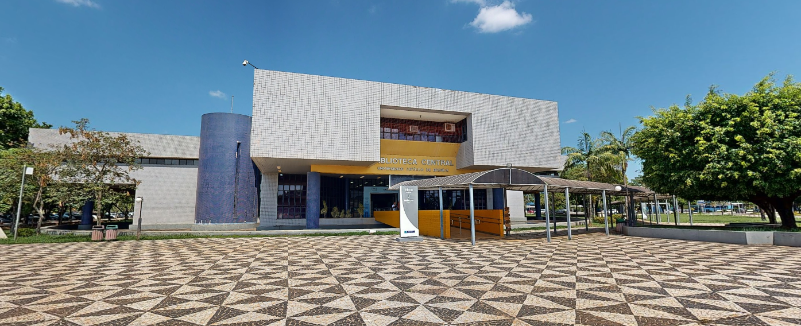

DESCRIÇÃO
A biblioteca da Universidade Católica de Brasília (UCB) oferece um acervo diversificado de livros, periódicos e materiais digitais, apoiando estudantes e professores em suas atividades acadêmicas. Conta com espaços modernos, como salas de estudo, computadores com internet e atendimento especializado para pesquisa.
SALAS E DEPARTAMENTOS
- TÉRREO: Banheiros à direita, estantes vermelhas (referência e livros de 001 a 098), área de descanso com puffs e cabines de estudo individual à esquerda;
- 1º ANDAR: Segunda parte das estantes vermelhas à direita com salas de estudo para grupo, banheiros nos quatro cantos do andar, estantes laranja à esquerda com o acervo 3 e salas de estudo para grupo, estantes azuis com terminais de consulta e salas de estudo para grupo e estantes verdes com acervo 0 a 2 e sala de coleção da UCB;
HORÁRIO DE FUNCIONAMENTO
- Segunda a sexta-feira, das 8h às 21h45 e sábado, das 8h15 às 14h.